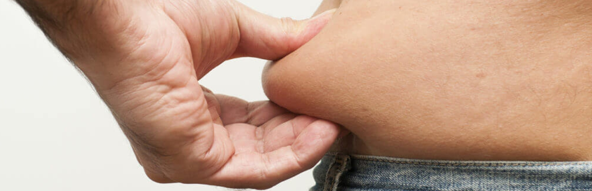
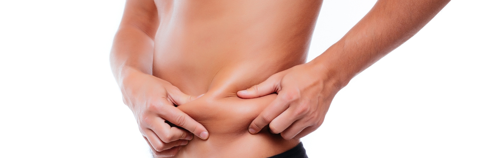

Uma abordagem completa para remodelagem abdominal
A abdominoplastia é uma cirurgia plástica que visa remover o excesso de pele e gordura do abdômen, bem como corrigir a flacidez dos músculos abdominais. O objetivo é proporcionar um contorno corporal mais harmonioso e uma aparência rejuvenescida. Existem diversas variações deste procedimento, cada uma adaptada às necessidades específicas do paciente. Confira a seguir os detalhes de cada técnica:
Mini-abdominoplastia
A mini abdominoplastia é uma cirurgia plástica que remove gordura e pele da região inferior do abdômen. É uma técnica menos complexa do que a abdominoplastia tradicional.
- Indicação:
- Pessoas que estão no peso ideal, mas têm gordura acumulada na região inferior do abdômen.
- Pessoas que têm flacidez ou muitas estrias na região inferior do abdômen.
- Pessoas que se incomodam com o volume na região inferior do abdômen.
- Procedimento:
- Envolve uma incisão menor na região inferior, focando na remoção de tecido localizado abaixo do umbigo.
- Benefícios:
- Menor tempo de cirurgia, cicatrizes discretas e recuperação mais rápida.
Abdominoplastia convencional
A abdominoplastia convencional é uma cirurgia plástica que remove o excesso de pele e gordura do abdômen. É também conhecida como lipoabdominoplastia.
- Indicação:
- Flacidez na região dos quadris e nas partes inferiores das costas.
- Excesso de gordura localizada junto à pele.
- Melhora da aparência do abdome e da cintura.
- Restauração de músculos enfraquecidos ou separados.
- Procedimento:
- Realizada por meio de uma incisão horizontal na região do abdômen, que permite a remoção do excesso de pele e o reposicionamento do umbigo, juntamente com o aperto dos músculos abdominais.
- Benefícios:
- Proporciona um contorno abdominal uniforme, melhora a firmeza dos músculos e resulta em um perfil mais definido.

Abdominoplastia estendida
A abdominoplastia estendida é uma cirurgia plástica que remove excesso de pele e gordura de todo o abdômen, incluindo flancos e quadris. É indicada para quem tem muito excesso de pele flácida.
- Indicação:
- Pacientes com muito excesso de pele flácida no abdômen e nos flancos.
- Casos de perda acentuada de peso, como pós-bariátrica.
- Procedimento:
- Consiste em uma incisão mais extensa que se estende lateralmente a partir da abdominoplastia convencional, permitindo a remoção de tecido extra dos lados.
- Benefícios:
- Melhora a transição entre o abdômen e os flancos, oferecendo um contorno corporal mais harmonioso, especialmente indicado para mulheres após grandes oscilações de peso ou múltiplas gestações.
Abdominoplastia circunferencial
A abdominoplastia circunferencial é uma cirurgia plástica que remove o excesso de pele e gordura do abdômen, flancos e costas. Também é conhecida como abdominoplastia 360 graus ou body lifting.
- Indicação:
- Indicada para pacientes com excesso de pele que envolve toda a circunferência do tronco (abdômen, flancos e região lombar) geralmente após perda de peso significativa.
- Procedimento:
- Abdominoplastia circunferencial simples - A incisão é feita de forma transversal, do abdômen ao dorso.
- Abdominoplastia circunferencial composta - A incisão é semelhante à simples, mas é associada a outra longitudinal;
É indicada em casos de maior flacidez.
- Benefícios:
- Proporciona uma remodelagem completa, eliminando o excesso de pele de maneira uniforme e criando um contorno "cinturão" bem definido.

Abdominoplastia RAFT
A abdominoplastia RAFT é uma técnica cirúrgica que envolve a lipoescultura da musculatura abdominal. O RAFT é a sigla para "Rectus Abdominis Fat Transfer", que significa "Transferência de Gordura para o Músculo Reto Abdominal".
- Indicação:
- Ideal para pacientes que necessitam de um reforço adicional da parede abdominal, visando resultados duradouros na correção da flacidez.
- Procedimento:
- A técnica RAFT utiliza suturas especiais e métodos de reposicionamento da fáscia para reforçar os músculos abdominais. Essa abordagem intensifica a sustentação dos tecidos e reduz a recorrência da flacidez.
- Benefícios:
- Redução do excesso de pele.
- Redução da gordura localizada.
- Definição abdominal mais natural.
- Regeneração da musculatura abdominal.

Cuidados pós-operatórios e recuperação
Independentemente do tipo de abdominoplastia, a recuperação envolve cuidados específicos:
- Uso de cinta abdominal:
- Essencial para auxiliar na modelagem e reduzir o inchaço, sendo recomendado, em geral, por 2 a 3 meses para otimizar os resultados.
- Retorno às atividades físicas:
- Recomendado após 30 dias de repouso, para garantir uma recuperação adequada e evitar qualquer risco à cicatrização.
- Hidratação:
- Manter-se bem hidratado é essencial para uma recuperação eficiente e boa cicatrização da pele.
- Alimentação adequada:
- Seguir as orientações alimentares da nutricionista da equipe do Dr. Pedro Casavechia é crucial para garantir uma recuperação saudável e acelerar a cicatrização.
- Exposição solar:
- É fundamental evitar a exposição direta ao sol na área da cicatriz, especialmente nos primeiros meses pós-cirurgia, para não prejudicar o processo de cicatrização.
- Acompanhamento médico:
- Consultas regulares para monitorar a cicatrização e ajustar os cuidados conforme necessário.